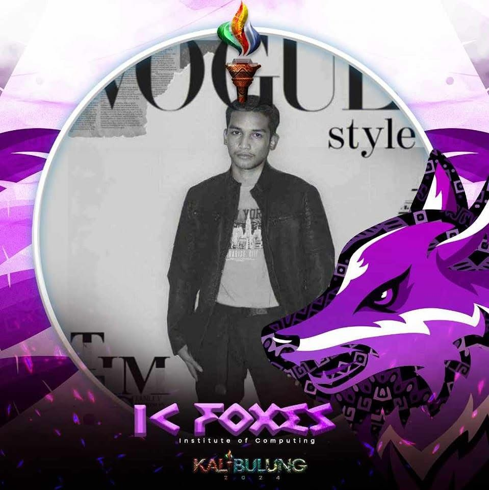
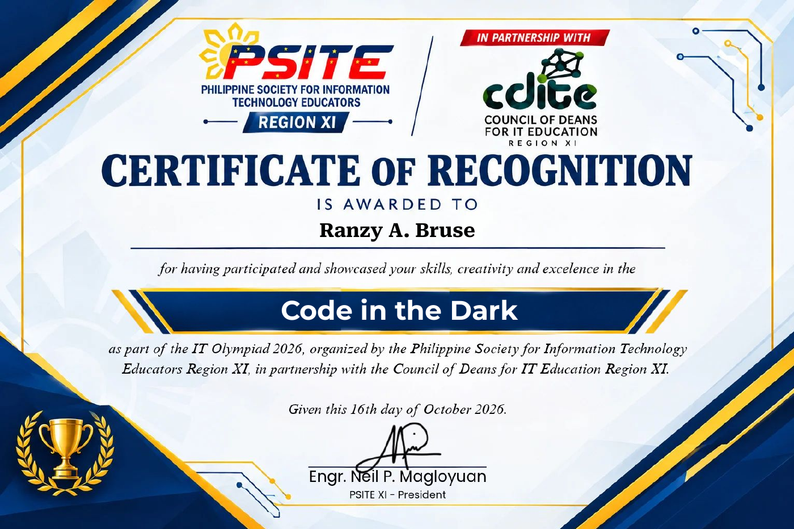

From logic to layout.
Programming languages and the building blocks of the web.
LEARNING. BUILDING. MOVING FORWARD.
Information Technology Student
Turning curiosity into practical software.
A fourth-year BSIT student exploring the space between thoughtful interfaces and useful technology.

01 / A LITTLE ABOUT ME
I’m Ranzy, a fourth-year Information Technology student focused on building practical, well-crafted software.
I enjoy working across front-end interfaces and back-end logic. Every project is a chance to strengthen my foundations, solve a new problem, and learn how to make technology easier to use.
To apply my developing programming and web development skills in an internship or entry-level opportunity, contribute to meaningful projects, and grow through collaboration and hands-on experience.
02 / MY TOOLKIT
A growing foundation in development,
tools, and working with people.
Programming languages and the building blocks of the web.
Tools for writing code, managing changes, and working with data.
Professional skills that support the work beyond the code.
03 / SELECTED WORK
Curiosity → Code → Creation
PERSONAL PROJECT / WEB DEVELOPMENT
A home for my skills, educational journey, and development work. Designed to make my professional profile clear, accessible, and easy to explore.
View source code ↗More academic projects will be added as they are documented and published.
04 / THE JOURNEY SO FAR
Education and practical learning
are where my journey begins.
EDUCATION
Davao del Norte State College
Panabo City · Section BSIT 4B
Developing skills in programming, web development, database management, and collaborative problem solving.
PROJECT EXPERIENCE
Personal CV Website
Presenting my skills online, organizing source code with GitHub, and practicing responsive web design through this portfolio.

ACHIEVEMENTS & CERTIFICATIONS / OCTOBER 16, 2026
Certificate of Recognition · IT Olympiad 2026
Recognized for participating and showcasing skills and creativity in Code in the Dark, organized by the Philippine Society for Information Technology Educators Region XI in partnership with the Council of Deans for IT Education Region XI.
View certificate (PDF) ↗05 / WHAT’S NEXT?
Interested in my work or learning journey?
Email me or explore my public projects on GitHub.